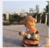
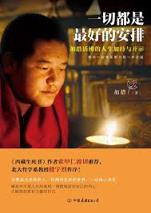
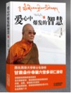

九味安神茶 : He lives in the Europe, and famous for posting a travel picture with a puppet known as Abu Ciren.
德吉老爷 T: He is a singer, who was famous for Tibetan Rap, his representative work is A pa la(Father).
羊兄: He is a teacher of Chushu middle school at Lhasa, graduated from Beijing Teacher University. He is most famous among Tibetan young generation.

加措活佛
One of the most popular lamas on weibo
加措活佛: Gyaltso Tulku’s Weibo has 12675718 followers , he is cofounder of Compassion NGO, and he is the Tulku of Draga monastery at the Nyachukha of Kham. He published his first book Everything is the best arrangement in 2014.

多识仁波切: Dorshi Renpoche is professor of Minzu university of Northwest, he published a lot of books and had a large influence in both Tibetan and China, such as The Wisdom Of Compassion.
香周 007: He is a teacher of Chushu middle school at Lhasa, graduated from Beijing Teacher University. He is most famous among Tibetan young generation.
{% endblock %}